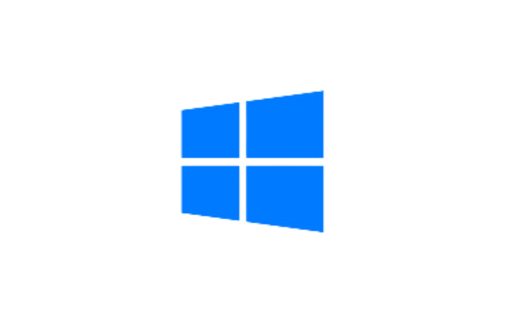
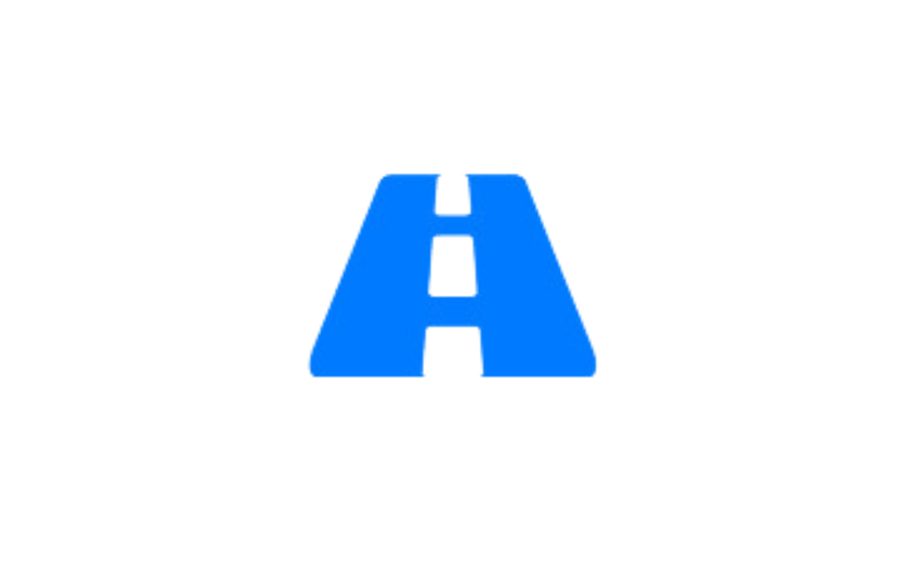

ประกาศรับสมัครรอบ Portfolio
รับสมัครรอบ Portfolio หลักสูตรวิทยาการคอมพิวเตอร์และสารสนเทศรับสมัคร 2 วิชาเอก
สมัครได้ที่ https://admissions.kku.ac.th/
กิจกรรมทางหลักสูตร
เปิดรับสมัครตั้งแต่วันนี้ - วันที่ 30 กันยายน 2566
สมัครได้ที่ https://is.kku.ac.th/admission/camp/site/signup
สิ่งสนับสนุนการเรียน
ห้องปฏิบัติการเฉพาะทางสำหรับการปฏิบัติที่หลากหลาย พร้อมด้วยซอฟต์แวร์สำหรับการเรียนการสอนจากมหาวิทยาลัยขอนแก่น Google suite for Education, Microsoft imagine x - dreamspark และ Microsoft 365
กิจกรรมเสริมหลักสูตร
กิจกรรมอบรมเสริมหลักสูตรจากวิทยากรเฉพาะทาง สนับสนุนการแสดงออกของนักศึกษาด้วยค่ายบริการวิชาการเพื่อชุมชน ส่งเสริมการกิจกรรมการแข่งขันทางวิชาการทั้งระดับภูมิภาคและระดับประเทศ
โครงงานและสหกิจศึกษา

รายวิชาเพื่อส่งเสริมความสามารถและความคิดสร้างสรรคของนักศึกษา หรือเลือกที่จะเข้าร่วมเรียนรู้การทำงานจากการทำงานจริงกับบริษัทพาร์ทเนอร์ของหลักสูตรกว่า 50 บริษัท
เกี่ยวกับหลักสูตร
หลักสูตรวิทยาการคอมพิวเตอร์และสารสนเทศเป็นสูตรการศึกษาที่เน้นการเรียนรู้เกี่ยวกับคอมพิวเตอร์และเทคโนโลยีสารสนเทศต่าง ๆ
หลักสูตรวิทยาศาสตรบัณฑิต สาขาวิชาวิทยาการคอมพิวเตอร์และสารสนเทศ (หลักสูตรใหม่ พ.ศ.2559) มุ่งผลิตบัณฑิตให้มีความรู้ความสามารถในด้านวิทยาการคอมพิวเตอร์และสารสนเทศ ทั้งด้านทฤษฎีและปฏิบัติ มีทักษะและประสบการณ์การเรียนรู้และการฝึกปฏิบัติ พร้อมสำหรับการทำงาน มีการคิดวิเคราะห์อย่างเป็นระบบ มีความคิดริเริ่มสร้างสรรค์ทางวิชาการ ความสนใจไฝ่รู้ หมั่นศึกษาตลอดชีวิต สามารถนำความรู้ไปประยุกต์ใช้ได้อย่างเหมาะสม สามารถทำงานร่วมกับผู้อื่นได้ดี มีความรับผิดชอบต่อสังคม มีคุณธรรม จริยธรรม และจรรยาบรรณตามหลักวิชาการ/วิชาชีพ เข้าใจในสถานการณ์ของโลกและ สังคมที่มีความแตกต่างหลากหลายและเปลี่ยนแปลงอยู่ตลอดเวลา เป็นบัณฑิตที่พึงประสงค์ของสังคมและตลาดงานปัจจุบัน
วิชาเอก
- วิทยาการข้อมูลและปัญญาประดิษฐ์ (DS)
- วิทยาการคอมพิวเตอร์และสารสนเทศ (CS)

ทำไมถึงต้องเรียน CIS
หลักสูตรสำหรับนักพัฒนา เพื่อนักวิชาการคอมพิวเตอร์และนักพัฒนาซอร์ฟแวรเพื่อองค์กร และหน่วยงานทั้งภาครัฐและเอกชน พร้อมสิทธิประโยชน์มากมายจากหลักสูตร
GOOGLE SUITE FOR EDUCATION
ชุดบริการจาก Google อันโด่งดัง สนับสนุนการเรียนการสอนผ่านระบบออนไลน์ เก็บรวบรวมงานและทำงานร่วมกันผ่านระบบ Cloud สำหรับนักศึกษามหาวิทยาลัยขอนแก่น
MICROSOFT OFFICE 365
กิจกรรมอบรมเสริมหลักสูตรจากวิทยากรเฉพาะทาง สนับสนุนการแสดงออกของนักศึกษาด้วยค่ายบริการวิชาการเพื่อชุมชน ส่งเสริมการกิจกรรมการแข่งขันทางวิชาการทั้งระดับภูมิภาคและระดับประเทศ
MICROSOFT AZURE DEV TOOLS
ซอฟแวร์ลิขสิทธิจากไมโครซอฟ สำหรับนักศึกษามหาวิทยาลัยขอนแก่น ระบบปฏิบัติการ Windows 10 และสิทธิการใช้งานเตรื่องมือนักพัฒนาระบบคราว
ฝึกงานภาคฤดูร้อน
ออกฝึกงานร่วมกับหน่วยงานอื่นๆ เพื่อศึกษาและเรียนรู้การทำงานจริงกับ องค์กรหรือหน่วยงานทางด้านไอที
สหกิจศึกษา
ร่วมปฏิบัติงานกับบริษัทซอฟแวร์ และไอทีทั่วประเภท เทอมสุดท้ายของการเรียนการสอน
สหกิจอาเชียน
ทุนสนับสนุนจากมหาวิทยาลัย บินไปทำงานร่วมกับบริษัทซอฟแวร์ในภูมิภาคอาเซี่ยน เทอมสุดท้ายของการเรียนการสอน
บุคลากรประจำหลักสูตร
คำถามที่พบบ่อย
Q : คะแนนสอบวิชา O-NET, GAT, PAT
A : ใช้คะแนนสอบกลุ่มเทคโนโลยีสารสนเทศ
| องค์ประกอบ | ค่าร้อยละ |
|---|---|
| GPAX | 20 คะเเนน |
| O-NET | 30 คะเเนน |
| GAT | 10 คะเเนน |
| PAT1 | 20 คะเเนน |
| PAT2 | 20 คะเเนน |
Q : จำเป็นต้องมีพื้นฐานการเขียนโปรแกรมมาก่อนหรือไม่
A : ไม่จำเป็น ในเทอมแรกจะมีรายวิชาพื้นฐานการเขียนโปรแกรมให้นักศึกษาได้เรียนเพื่อเป็นการปรับพื้นฐานก่อน
Q : จบไปแล้วทำงานอะไรได้บ้าง
A : หลักสูตรเน้นการพัฒนาโปรแกรมและการใช้สารสนเทศเพื่อองค์กร บัณฑิตสามารถสมัครเข้าได้ทั้งหน่วยงานราชการ (นักวิชาการคอมพิวเตอร์)
หน่วยงานเอกชน (นักพัฒนาซอฟต์แวร์, ไอที) หรือเปิดบริษัทพัฒนาโปรแกรมหรือทางด้านไอทีได้